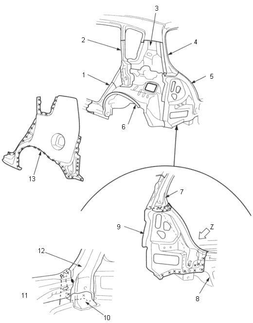

|
- WHEEL ARCH EXTENSION
- QUARTER PILLAR INNER
- REAR PILLAR INNER
- REAR PILLAR GUTTER UPPER
- REAR PILLAR GUTTER LOWER
- REAR INNER PANEL
- REAR PILLAR GUTTER LOWER
- REAR PANEL
- REAR PILLAR GUTTER UPPER
- REAR PANEL GUSSET
- VIEW (Z)
- REAR GUTTER LOWER STIFFENER
- OUTER PANEL
|